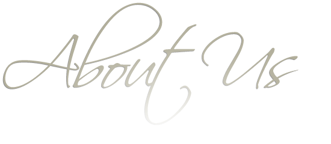

Leapfrog College of Information Technology
 >>>>>>> branch 'master' of https://github.com/alina12345/LeapFrog-Campus-new-version.git
>>>>>>> branch 'master' of https://github.com/alina12345/LeapFrog-Campus-new-version.git
- Home
- About Us
- Departments
- Gallery
- Contact Us =======
We’re a non-profit membership organization committed to excellence and equity in education. Our mission is to connect students to college success and opportunity.
What we do
We promote excellence and equity in education through courses in Engineering for Bachelors, and by providing students a path to college opportunities, including financial support and scholarships in Master programs. We also serve the education community through research and advocacy on behalf of students, educators, schools and colleges.
Whom we serve
Through our work we serve more than fifteen hundred students each year enrolled in various programs in Bachelors in Engineering. Our aim is to produce engineers who are highly qualified and at the same time are ready to serve the mankind and can come up with innovative ideas which facilitates the modern techno-trends and at the same time conserve the world for future.
Our History
In 2006 AD Leapfrog Campus was established as an Engineering College under the affiliation of Tribhuwan university in the premises of Kupondole, Lalitpur. Till now three batch of students have graduated from here, which totals to One Hundred and Twenty Engineers. We are proud that since 2009 we are in the top of the list of Best Engineering Colleges of Nepal. =======
We're a non-profit membership organization committed to excellence and equity in education. Our mission is to connect students to college success and opportunity.

What we do
We promote excellence and equity in education through courses in Engineering for Bachelors, and by providing students a path to college opportunities, including financial support and scholarships in Master programs. We also serve the education community through research and advocacy on behalf of students, educators, schools and colleges.

Whom we serve
Through our work we serve more than fifteen hundred students each year enrolled in various programs in Bachelors in Engineering. Our aim is to produce engineers who are highly qualified and at the same time are ready to serve the mankind and can come up with innovative ideas which facilitates the modern techno-trends and at the same time conserve the world for future. >>>>>>> branch 'master' of https://github.com/alina12345/LeapFrog-Campus-new-version.git
Copyright 2012, All Rights Reserved
History
In 2006 AD Leapfrog Campus was established as an Engineering College under the affiliation of Tribhuwan university in the premises of Kupondole, Lalitpur. Till now three batch of students have graduated from here, which totals to One Hundred and Twenty Engineers. We are proud that since 2009 we are in the top of the list of Best Engineering Colleges of Nepal.

Copyright 2012, All Rights Reserved